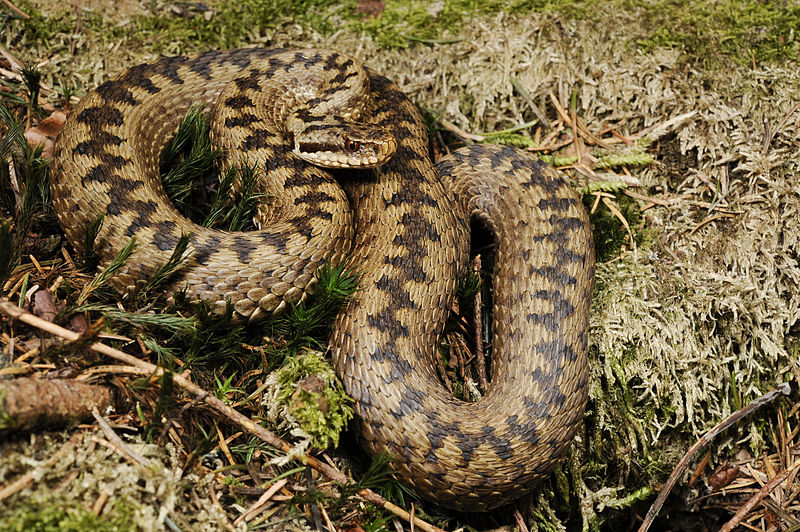

Кобра (Naja)

Морфологічний: Тіло довге, струнке, може досягати до 3 метрів. Характерною рисою є капюшон, який змія розширює при загрозі. Голова овальна.
Фізіологічний:Має активні нейротоксини, що впливають на нервову систему жертви. Кобра може підіймати передню частину тіла, щоб виглядати більшими та вражати жертву швидким ударом. При укусі паралізує нервові центри жертви.
Екологічний:Зустрічається у тропічних і субтропічних регіонах Африки та Азії. Кобра часто полює на дрібних ссавців, птахів і рептилій. Вона має ключову роль у регуляції популяцій гризунів у своєму середовищі.
Географічний: Поширена в Південній та Південно-Східній Азії, а також в Африці. Кожен вид має чітко визначені ареали поширення.
БіохімічнийОтрута кобри містить нейротоксини, фосфоліпази та протеїни, які впливають на передачу імпульсів нервової системи, викликаючи параліч.
Цитологічний Клітини мають добре розвинену систему синтезу токсинів. Спеціалізовані клітини отруйних залоз активно продукують нейротоксичні білки.
ЕтологічнийВідома своєю захисною поведінкою — кобра піднімається та розширює капюшон, коли відчуває загрозу. Вона попереджає противника гучним шипінням перед нападом. Може "вистрілювати" отруту в очі ворога.
ГенетичнийГенетично кобри належать до родини Elapidae. Вони мають складні генетичні механізми, що кодують синтез нейротоксинів.
Гадюка (Viperidae)
Морфологічний:Тіло товсте та компактніше, довжина зазвичай до 1.5 метрів. Голова трикутної форми з виразними границями між головою та шиєю. Характерна луската поверхня та гострі зуби для введення отрути.
Фізіологічний:Основна дія отрути — гемотоксична, вражає кровоносну систему, розщеплюючи клітини крові та тканини. Гадюки часто кусають, не попереджаючи, на відміну від кобри, і використовують міцні зуби для введення отрути.
Екологічний:Поширені в різних кліматичних зонах — від пустель до лісів, Європа, Азія та Америка. Їх раціон включає дрібних ссавців, амфібій і птахів. Вони часто живуть у важкодоступних місцях, ховаються в листі або ґрунті.
Географічний:Широке поширення по всьому світу, включаючи Європу, Азію, Північну та Південну Америку. Вони адаптовані до різних екосистем, від гірських місцевостей до тропічних лісів.
БіохімічнийОтрута гадюк багата на гемотоксини, ферменти, які руйнують клітини крові та судини, викликаючи масивні кровотечі та некрози тканин.
ЦитологічнийКлітини отруйних залоз гадюк спеціалізовані на синтезі гемотоксинів та протеїназ, які розщеплюють білкові структури жертви.
ЕтологічнийБільш скритна поведінка, частіше нападає без попередження. Часто займає захисні позиції у природному середовищі, ховаючись у листі або під камінням.
ГенетичнийГенетично належать до родини Viperidae, яка характеризується виробленням гемотоксинів. Їхня ДНК також кодує білки, відповідальні за швидке зсідання крові жертви.